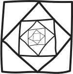
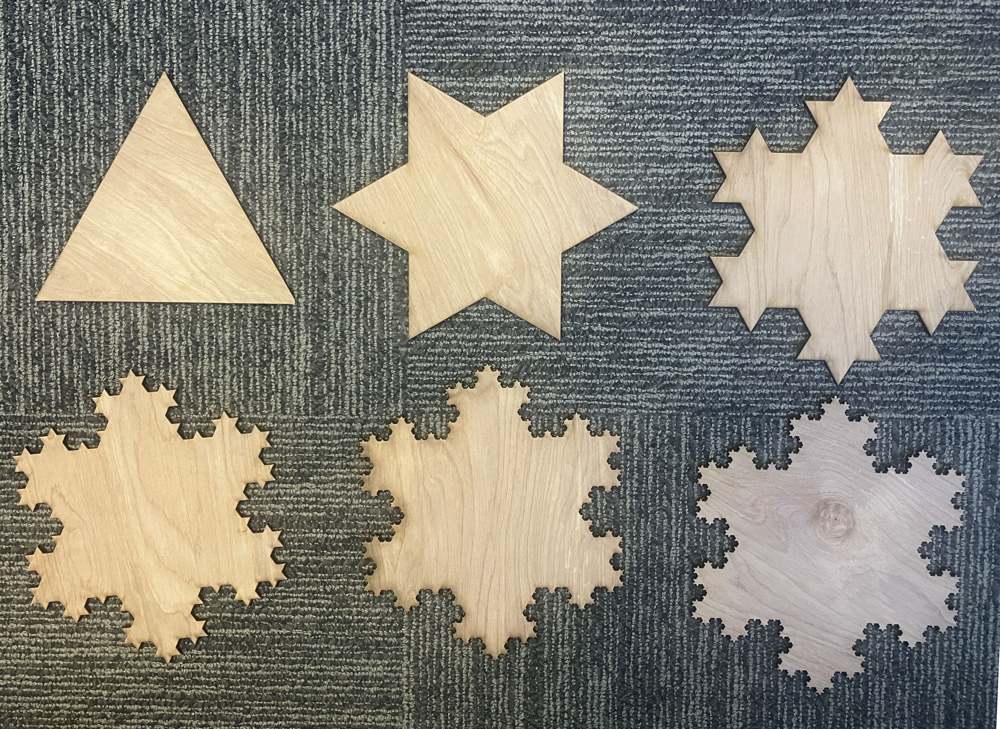

some fun sequence and series problems!!!!
-
The formula we came up with for a geometric series requires that the series starts at \(n=0\):
\[\sum_{n=0}^{n=\infty}a^n = \text{(whatever the formula was)}\]
But what if we have a geometric series that starts not at \(n=0\), but \(n=1\), like \(\displaystyle\sum_{n=1}^{n=\infty}a^n\)? Can you come up with a formula for it?
What about \(\displaystyle\sum_{n=-2}^{n=\infty}a^n\)? Can you come up with a formula?
We’ve made up this cool \(\sum\) notation for iterated (and possibly even infinite) sums! When we make up new notations, it’s helpful to figure out what algebraic properties they have, so we can, like, do algebra and simplify and transform and manupulate stuff.
We’ve figured out that we can pull constants out of sums: \[\sum_{n} c \cdot f(n) \, =\, c \cdot \sum_{n} f(n)\]
- Can we also split up sums along addition? \[\sum_{n} f(n) + g(n) \,\stackrel{???}{=}\, \sum_{n} f(n) + \sum_{n} g(n)\]
- What about along multiplication? \[\sum_{n} f(n) \cdot g(n) \,\stackrel{???}{=}\, \sum_{n} f(n) \cdot \sum_{n} g(n)\]
- What about division?
- Subtraction?
Here’s a fun series:
\[\sum_{n=0}^{n=\infty} \frac{(-1)^n}{2n+1} \]
Does it converge? Does it diverge? Can you figure out what it converges to? (If you can’t figure out analytically (i.e., symbolically) what it converges to, can you try to estimate it using a computer?)
The following is a sketch of a fractal, constructed by taking a square, drawing a square inside of it using the midpoints as corners, drawing a square inside of that using the midpoints as corners, and so forth, ad infinitum. Find a) the total area enclosed by all the squares, and b) the total perimeter of all the squares.

Here are the first six iterations of a beautiful fractal I laser-cut in the i-Lab:

This fractal is Helge von Koch’s snowflake curve, known generally as the Koch curve or Koch snowflake. It is drawn by taking an equilateral triangle, then pasting on three equilateral triangles in the center-third of each side, then pasting on equilateral triangles into the center-third of the sides of the triangles constructed in the previous step, and so forth.
- When I cut these out on the laser-cutter, the first iteration had a side length of seven inches. The sixth and final iteration, with tiny triangle nubs just a few hundredths of an inch wide, took about \(20\) minutes for the laser cutter to completely cut out. How fast was the laser cutter moving during that final iteration?
- What’s the total area enclosed by a Koch snowflake? (By this I mean in the limiting case; the snowflake as the numer of iterations becomes infinite.)
- What’s the perimeter of a Koch snowflake?
- Here’s a better way to phrase the previous two questions: suppose you go to the i-Lab and laser-cut the actual, infinite version of the Koch snowflake. How long would it take to cut it out? How much material would it take?
- Write out all the terms—well, I guess we should say, factors—of \(\displaystyle \prod_{k=0}^{k=3}\left(2^k + 3\right)\)
- Consider the iterated product \(\displaystyle \prod_{k=1}^{k=n}(k)\). Do we have another name for this function?
- Consider the infinite product \(\displaystyle \prod_{k=1}^{k=\infty}\frac{1}{k}\). Does it converge or diverge? If the former, to what does it converge? How about \(\displaystyle \prod_{k=1}^{k=\infty}\frac{2}{5k+70}\)?
- What algebraic properties can we learn about iterated products (like the properties of iterated sums in problem 116)? Can we pull constants out? Can we split them up along addition? Can we split them up along multiplication?
Here’s another infinite product:
\[2 \cdot \left[ \left( \frac {2}{1}\cdot \frac {2}{3} \right) \cdot \left( \frac {4}{3}\cdot \frac {4}{5} \right) \cdot \left( \frac {6}{5}\cdot \frac {6}{7} \right) \cdot \left( \frac {8}{7}\cdot \frac {8}{9} \right) \cdots \right]\]
So there’s a \(2\) on the outside, but then the entire interior is this long infinite product. I’m using the square brackets instead of (round ones) just for clarity.
- Write this product in \(\Pi\) notation.
- Calculate the first few products. In other words, see what happens when you calculate this product from \(n=1\) to \(n=2\), then from \(n=1\) to \(n=3\), then from \(n=1\) to \(n=4\), then from \(n=1\) to \(n=5\), etc., multiplying on a new factor each time. Does it look like the product is converging, or diverging? If it looks like it’s converging, what does it look like it’s converging to? Using a spreadsheet or writing a short computer program is helpful here, since it takes a long time to converge, slash for it to become apparent what it converges to. Note that you can solve this part even if you didn’t figure out how to write this product in \(\Pi\) notation, as long as you can figure out in a more general sense what the pattern’s doing.)
Percentages are nonlinear. Suppose it takes you six hours to drive from SF to LA going 60mph. If you increase your speed by \(100\%\)—i.e., double it—then the time it takes to get to LA doesn’t go down by \(100\%\). You don’t get to LA in zero hours by driving 120mph. (Among other things, this would violate conservation of energy.) Even if you increase your speed by only \(50\%\), you don’t decrease the amount of time it takes to get to LA by \(50\%\).
- Why not? How long would it take? Figure it out.
On the other hand, if you’re dealing only with small differences in speed, increasing your speed by \(x\%\) will decrease your travel time by \(x\%\) (roughly, approximately).
Verify that this is true in this specific example. For instance, if you increase your speed by \(2\%\), how long will it take to get to LA? How does that compare to \(98\%\) of six hours? (You can use a small percentage other than \(2\%\) if you like!)
Most importantly, why is this true? Make an argument for why, as long as \(x\) is reasonably small, if you increase your speed by \(x\%\), your travel time will decrease by about \(x\%\).
- Can you come up with a recursive definition for this sequence? That is, can you write a formula for the \((n+1)\)st term, in terms of the \(n\)th term?
- Compute the first few terms of this sequence. Does it seem to be converging, or diverging? If it seems to be converging, what does it seem to be converging to? Why?
- Call this sequence \(S\), i.e., let \[S = \sqrt{2+ \sqrt{2+\sqrt{2 + \cdots}}}\] Can you rewrite the right side of this equation so that it also has an \(S\) in it? Having done that (and thus having \(S\) on both sides of this equation), can you solve this equation for \(S\)? What do you conclude?
- Liam’s problem: what if we ask these same questions, but with cube roots? I.e.: \[\sqrt[3]{2},\quad \sqrt[3]{2 + \sqrt[3]{2},\,\, },\quad \sqrt[3]{ 2+ \sqrt[3]{2 + \sqrt[3]{2},\,\, }}, \quad \cdots\]
Suppose you want to balance a laptop on the edge of the table so that it’s partially hanging off the edge (or, to use a fancy word, so that it’s cantilevered off the edge). How far over the edge can you push it? It’s not that hard to figure out, either in practice or in theory, that you need to have at least half the laptop on the table:
(Imagine a picture here of a laptop balancing precariously half-off the edge of a table!)
The physics explanation is that then the torques balance out and whatnot. But what if you want to balance two laptops on top of each other, cantilevering over the edge?
(Imagine a picture here of two laptops balancing precariously on the edge of a table!)
Now we need to have at least half of their combined center of mass over the table. Which means that the top laptop we can push out further! So, how far? How far out can you get the stack of two laptops to go?
What if we have three laptops? Four laptops? \(n\) laptops? Is it possible to stack so many laptops so that the top laptop is, in fact, not at all over the table??? What if we want the edge of the top laptop to be, say, \(10\) feet away from the edge of the table? How many laptops would we need to stack? (Probably it would help to define/instantiate some variables in here.) What if we want to have a giant stack of laptops, the topmost of which ends \(100\) feet away from the edge of the table? Is it possible? How many laptops would it take?!?! Try to work this all out both theoretically (i.e., with math), and experimentally (i.e., with actual laptops or similarly-shaped objects).
Here’s an photo of me attempting this demo in May 2024 in Block 4:
- dividing the number by \(2\), if the initial number is even, or
- multiplying the number by \(3\), and then adding \(1\), if the initial number is odd
and then repeat the process. In other words, if your first number is \(S(n)\), then: \[S(n+1) = \begin{cases} S(n)/2 &\text{if } n \text{ is even} \\ 3S(n)+1 & \text{if } n \text{ is odd} \end{cases}\] So, for instance, if your first number is \(7\), the sequence might start like: \[7, \quad (3\cdot 7 + 1) = 22, \quad (22/2) = 11, \quad (11\cdot 3 + 1) = 34, \quad (34/2) = 17, \quad \cdots\] or, without showing the work: \[7, 22, 11, 34, 17, \cdots\] So, pick some random number, and generate a bunch of terms of the sequence. Keep generating terms until something very boring starts happening. It might take a while. You might need to use a calculator; even better, write a short computer program or a spreadsheet, to save yourself the trouble of doing all that repetitive arithmetic. Try it starting with different numbers. What happens? Does the sequence converge, or diverge? If it converges, what does it converge to? Make a conjecture. Can you prove it?
If you can prove that the sequence converges (for any initial starting number), I’ll buy you a box of donuts every single day for the rest of the time we’re both at Nueva together.